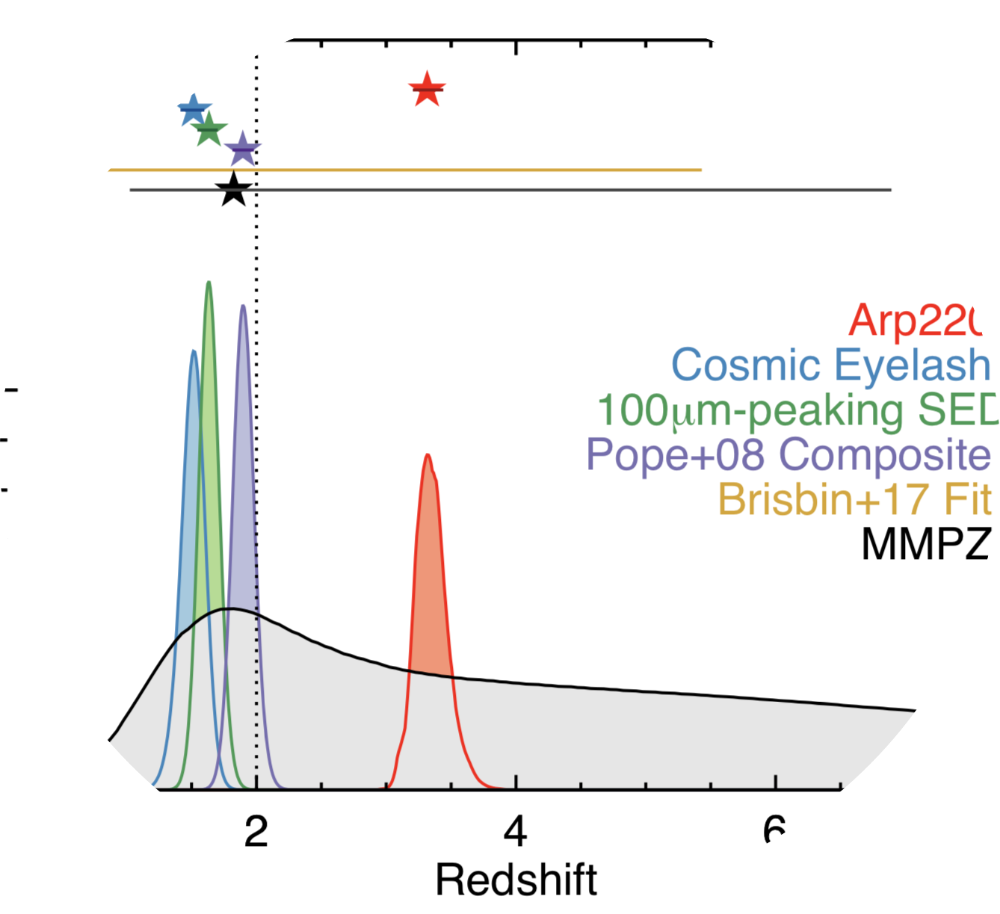

Downloads & Tools
FIR SED fitting, SCUBA-2 data, and more.
Below you can find a few research tools I've built over the years, from far-infrared SED fitting code, some plot animations which may be useful for talks, SCUBA-2 data release, and a 'dusty galaxy' sample contaminant spectrum to high-z LBG searches. As our group forges ahead, more will be added to this page. If you have a question about what's posted here, or you have trouble setting up code, don't hesitate to email me.
-
COSMOS-Web JWST Treasury Program
COSMOS-Web is the largest GO program in JWST's first year of observations. Here you can find COSMOS-Web exposure maps and ds9 region files for our coverage. When imaging products are released, they will be available for download directly from IRSA (to be linked here in the future).
-
Mapping Obscuration to Reionization with ALMA (MORA) Survey
 MORA is a blank-field 2mm map of the central region of the COSMOS field. MORA is designed to reveal the highest redshift obscured galaxies; the measurements from the first generation MORA survey are published in Zavala et al. (2021), Casey et al. (2021) and Manning et al. (2022). Measurement sets and maps available here.
MORA is a blank-field 2mm map of the central region of the COSMOS field. MORA is designed to reveal the highest redshift obscured galaxies; the measurements from the first generation MORA survey are published in Zavala et al. (2021), Casey et al. (2021) and Manning et al. (2022). Measurement sets and maps available here.
-
MMPZ: Millimeter Photometric Redshift
 A tool to fit FIR/mm photometric redshifts, when you lack constraints at other wavelengths (e.g. the optical/near-infrared). Based on our understanding of galaxies' distribution in the LIR-lambda_peak plane. Visit the mmpz page here.
-
Rest-Frame Optical Composite Spectrum of DSFGs
Casey et al. (2017) present a composite rest-frame optical spectrum for DSFGs from 4300-7000 angstroms. Continuum emission has been subtracted. You can download this spectrum for further analysis or use in other work at this link: here.
-
Dusty Contaminants for high-z LBG Searches
This is a template spectrum made up of 95 Herschel-detected galaxies in COSMOS which satisfy LBG selection from z=2.5-10, and could potentially live in high-z LBG datasets. This work is described more in Casey et al. (2014b). Download the template here.
-
SCUBA-2 Images of the COSMOS Field
Data from the 2nd generation SCUBA instrument on the James Clerk Maxwell Telescope taken in the COSMOS field. For now this encompasses the data described in Casey et al. (2013), a 400 square arcmin area in the central portion of the field, but soon we plan to marry this with the full COSMOS dataset including the large contributions from the S2-CLS team. Download our datasets here.
-
Far-Infrared SED Fitting Code cmcirsed
This is a simple IDL package built to fit far-infrared spectral energy distributions for galaxies easily and in a straightforward way. It works on the assumption that photometric constraints are minimal (~10 datapoints spanning 8-2000um) and uses that photometry to provide the user realistic estimates to a galaxy's far-infrared luminosity, dust temperature, and dust mass. Go to the cmcirsed page here.
-
Animated Plots
I've made a few key plots in animated form which can be used in talks or classes to get across some important concepts which aren't easily conveyed by static 2D plots. Feel free to use, but please give credit. Thanks!
-
InvisLRIS
IDL code to be used for reduction of Keck LRIS data, with invisible targets (i.e. without continuum) in mind.